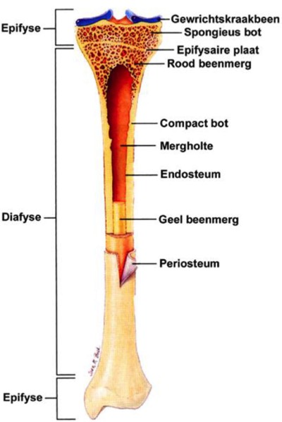

Typering van botweefsel:
A. Bekijk de extracellulaire matrix. De talrijk aanwezige collageen type I vezelbundels zijn niet afzonderlijk te zien, maar bepalen wel de kleur van de matrix.
B. Zoek de osteoblasten aan de rand van de botmatrix, af en toe een osteoclast in een lacune van Howship en osteocyten in lacunes in de botmatrix. In tegenstelling tot bij kraakbeen vormen de osteocyten géén isogene groepen.
C. Heb je te maken met compact of spongieus bot?
Kijk na of het bot:
a. uit een dicht opeengepakte laag bestaat = compact bot
b. opgebouwd is uit bottrabekels met daartussen mergholten = spongieus bot
D. Heb je te maken met plexiform of lamellair bot?
Kijk na of de botmatrix typische lamellen bevat.
A. Bekijk de extracellulaire matrix. De talrijk aanwezige collageen type I vezelbundels zijn niet afzonderlijk te zien, maar bepalen wel de kleur van de matrix.
B. Zoek de osteoblasten aan de rand van de botmatrix, af en toe een osteoclast in een lacune van Howship en osteocyten in lacunes in de botmatrix. In tegenstelling tot bij kraakbeen vormen de osteocyten géén isogene groepen.
C. Heb je te maken met compact of spongieus bot?
Kijk na of het bot:
a. uit een dicht opeengepakte laag bestaat = compact bot
b. opgebouwd is uit bottrabekels met daartussen mergholten = spongieus bot
D. Heb je te maken met plexiform of lamellair bot?
Kijk na of de botmatrix typische lamellen bevat.

Schematische tekening van de samenstellende delen van een lang pijpbeen, waarin je compact bot en spongieus bot kan terugvinden.
De diafyse is het cilindervormige centrale gedeelte dat bestaat uit een laag compact bot dat een grote holte omgeeft die bij deze tekening van een volwassen bot gevuld is met geel beenmerg. De opbouw als een holle cilinder zorgt ervoor dat dit gedeelte van het been een grote steuncapaciteit en weerstand kan bieden aan krachten loodrecht op de lengterichting van het bot, terwijl het been zelf nog steeds licht is van structuur. Aan de buitenkant van het compacte bot vind je de dikke bindweefsellaag van het beenvlies (periost(eum) terug, terwijl de kant naar de mergholte toe afgelijnd is door een epitheelachtig endost(eum).
Aan beide uiteinden van het lange pijpbeen vind je de epifysen terug die deel uitmaken van gewrichten, en om die reden moeten weerstaan aan krachten in vele verschillende richtingen. Op deze plaatsen zal je dan ook spongieus bot terugvinden waarin de botbalkjes op een zodanige manier zijn georiënteerd dat ze op deze plaats de overheersende krachten kunnen weerstaan. Het oppervlak is bedekt met hyalien gewrichtskraakbeen.
In spongieus bot zijn de mergholten tussen de botbalkjes opgevuld met rood beenmerg.
Tijdens de groei vind je op de grens tussen de diafyse en epifysen in lange pijpbeenderen (epifysaire) groeischijven terug, die bestaan uit hyalien kraakbeen.
De diafyse is het cilindervormige centrale gedeelte dat bestaat uit een laag compact bot dat een grote holte omgeeft die bij deze tekening van een volwassen bot gevuld is met geel beenmerg. De opbouw als een holle cilinder zorgt ervoor dat dit gedeelte van het been een grote steuncapaciteit en weerstand kan bieden aan krachten loodrecht op de lengterichting van het bot, terwijl het been zelf nog steeds licht is van structuur. Aan de buitenkant van het compacte bot vind je de dikke bindweefsellaag van het beenvlies (periost(eum) terug, terwijl de kant naar de mergholte toe afgelijnd is door een epitheelachtig endost(eum).
Aan beide uiteinden van het lange pijpbeen vind je de epifysen terug die deel uitmaken van gewrichten, en om die reden moeten weerstaan aan krachten in vele verschillende richtingen. Op deze plaatsen zal je dan ook spongieus bot terugvinden waarin de botbalkjes op een zodanige manier zijn georiënteerd dat ze op deze plaats de overheersende krachten kunnen weerstaan. Het oppervlak is bedekt met hyalien gewrichtskraakbeen.
In spongieus bot zijn de mergholten tussen de botbalkjes opgevuld met rood beenmerg.
Tijdens de groei vind je op de grens tussen de diafyse en epifysen in lange pijpbeenderen (epifysaire) groeischijven terug, die bestaan uit hyalien kraakbeen.
Vordering zelfstudie botweefsel: